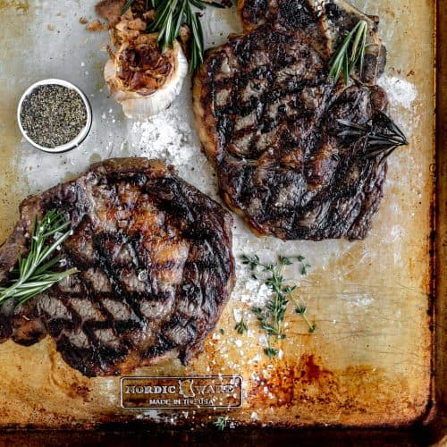

Bone-in Ribeye

Grilled Bone-in Ribeye with Garlic and Rosemary
In my opinion, bone-in ribeye is the best cut of steak on the cow. Rich, buttery, and beefy flavor
from the high fat count and great marbling. Keeping the bone in is key for keeping moisture and juices in the steak while cooking.
Ingredients
Roasted Garlic
- 2 heads of garlic
- 1 tsp olive oil
- 1/4 tsp kosher salt
Bone-in Ribeye Steaks
- 32 oz ribeye steaks (2-1 inch thick)
- 1 tsp kosher salt
- 1/2 tsp black pepper
- 1 tsp rosemary
Steps
Roasting the Garlic
- Preheat oven to 400F and line a baking sheet with parchment paper
- Cut the top of each garlic head
- Drizzle with olive oil, sprinkle with salt then roast for 35-45 minutes
or until a medium brown color and you're able to easily squeeze the garlic
out by lightly pressing the sides of the head
Grilling the Steaks
- Preheat your grill on high heat for 10-15 minutes
- Season both sides of the steaks with salt, pepper and the
chopped rosemary if you choose to use it
- Place the steaks on the grill and do not disturb them for 2
minutes. Turn the steaks 90 degrees and do not disturb for 2 more minutes
- Flip steaks over and repeat.
- Remove the steaks from the grill and let them rest for at least
5 minutes before cutting into them
- Serve and enjoy.